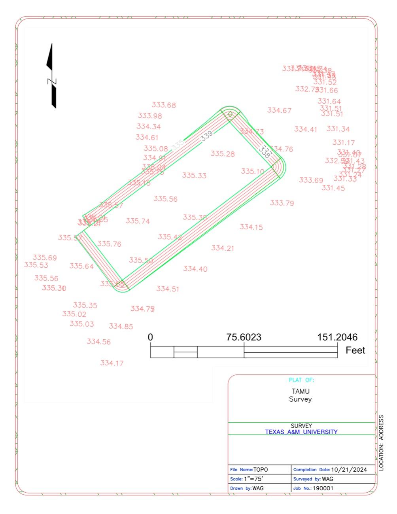

Survey · GEOG 352 and field work · 2024–2025
Setting the control everything else gets measured from
Four geodetic control points established and verified through NOAA OPUS, five sets of drone imagery flown over surveyed ground control, and a study asking how far a phone can be trusted against survey-grade equipment.
The problem
Before a site plan, a volume calculation or a drone flight means anything, something on the ground has to be tied to a known coordinate. TxDOT requires GNSS control for surveying, civil engineering and construction precisely because everything downstream inherits its accuracy — lane widening and road alignment are only as good as the control they were set out from, and rework is expensive.
There is a second, quieter question underneath it. Everyone now carries a GPS receiver in their pocket. How much of this work actually needs survey-grade equipment, and how much could be done with a phone?
My role
Field data collection and processing, and the written report. I ran static and real-time observations on the Leica GS15, processed the sessions through NOAA OPUS, compared coordinates across datums, and documented the results to TxDOT’s reporting standard. The survey was performed under the direct supervision of a Texas Registered Professional Land Surveyor.
On the handheld-GPS study I worked with Blane Frost and Lion Williamson, collecting and comparing the field data and co-authoring the poster.
Data and method
Geodetic control
- Four control points established — TAMUNICK, TAMUCVEN01, TAMUCVEN02 and TAMUCVEN03.
- Leica GS15 receiver — dual-frequency L1/L2, multi-constellation across GPS, GLONASS, Galileo and BeiDou; quoted RTK accuracy 8 mm + 1 ppm horizontal and 15 mm + 1 ppm vertical; logging RINEX.
- Static sessions processed through NOAA OPUS, which solves against the Continuously Operating Reference Station network rather than a local base.
- Real-time positions from TxDOT’s Virtual Reference Station network, with NGS NCAT used to convert and compare coordinates across datums.
- Reported to TxDOT Survey Manual Section 2 project documentation requirements.
UAS imagery
- Five flight sets, 416 geotagged frames, roughly 2.0 GB — Wolf Creek, Lampasas, Galveston, J. Davis and one further site.
- Surveyed ground control files alongside the imagery, so the frames can be registered rather than floated.
- Drafted output — a topographic plat with spot elevations and contours at 1″ = 75′, with title block, graphic scale and north arrow.
The handheld comparison
Five landmarks on the Texas A&M campus — the Centennial Eagle, the 12th Man statue, John David Crow, Danger 79er and Lawrence Sullivan Ross — were surveyed using the Field Maps app on iPhone 12, 13 and 14, then compared against reference points taken from remotely sensed imagery in ArcGIS Pro.

What I found
The control held. Four points were established with accuracies that support the civil and construction work they were set for, verified against the CORS network through OPUS rather than taken on trust from a single receiver.
Handheld GPS is better than expected, within limits. Comparing the Field Maps data against the ArcGIS Pro reference points returned an average positional deviation of under one metre, and that held consistently across the iPhone 12, 13 and 14. For general field applications — environmental monitoring, basic navigation, anything where sub-metre precision is not critical — a phone is a practical tool.
But not for the work that pays for control. Those same deviations are insufficient for high-precision tasks such as infrastructure planning or cadastral surveying, which still need RTK. The gap between “under a metre” and “8 mm + 1 ppm” is exactly the gap between a convenient field tool and a legal boundary.
What I would do differently
Test somewhere harder. The handheld study ran on an open urban campus with favourable satellite visibility, which is close to a best case. The findings may not represent performance in dense urban canyons or under forest canopy, and those are the conditions where the answer actually matters. Repeating it across varied environments is the obvious next step.
Widen the sample. Five landmarks and three handsets of the same brand is a thin basis for a general claim about handheld GPS. More points, more device makes, and repeat occupations at different times of day would say something much firmer.
Close the loop on the imagery. The flight sets and their ground control exist, but the photogrammetric products built from them are not part of this write-up. Carrying one site all the way through to a registered surface and a volume calculation would demonstrate the whole chain rather than its two ends.
- Control points
- 4OPUS / CORS verified
- RTK accuracy
- 8 mm+1 ppm horizontal
- Imagery
- 416frames · ~2.0 GB
- Flight sites
- 5
- Handheld GPS test
- < 1 mmean deviation